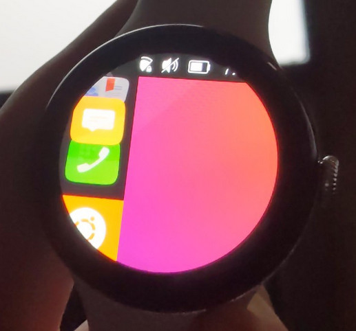

Google Pixel Watch 2 (google-eos)
|  | |
| Manufacturer | |
|---|---|
| Name | Pixel Watch 2 |
| Codename | google-eos |
| Released | 2023 |
| Type | watch |
| Hardware | |
| Chipset | Qualcomm Snapdragon W5 Gen 1 (SW5100) |
| CPU | Quad-core (4x Cortex-A53 1.7 GHz) |
| GPU | Adreno 702 (1000 MHz) |
| Display | 1.2" 450x450 circular AMOLED |
| Storage | 32 GB eMMC |
| Memory | 2 GB |
| Architecture | aarch64 |
| Software | |
| Original software | Wear OS |
| Original version | 4 (Android 13 based) |
| postmarketOS | |
| Category | testing |
| Pre-built images | no |
| postmarketOS kernel | 5.15 |
{kind=link}
Status: pmOS port hasn't been attempted yet, bootimg header v4 (GKI 2.0)
| Flashing | |
|---|---|
| USB Networking | |
| Internal storage | |
| SD card | |
| Battery | |
| Screen | |
| Touchscreen | |
| Multimedia | |
| 3D Acceleration | |
| Audio | |
| Connectivity | |
| WiFi | |
| Bluetooth | |
| GPS | |
| NFC | |
| Modem | |
| Calls | |
| SMS | |
| Mobile data | |
| Miscellaneous | |
| FDE | |
| USB OTG | |
| Sensors | |
| Accelerometer | |
| Magnetometer | |
| Ambient Light | |
| Haptics | |
| Barometer | |
|
This device is based on the Snapdragon W5 Gen 1. See the SoC page for common tips, guides and troubleshooting steps |
The non-LTE model with otherwise identical specs is codenamed aurora.
Bootloader unlock
To begin using the device you unfortunately need to set it up through the Google Pixel Watch app on a full fat Android 9+ device over Bluetooth. The charging base and the pogo pins on the watch back side are USB data transfer enabled. Then enable developer mode, allow OEM unlocking and fastboot flashing unlock (flashing anything from https://developers.google.com/android/images-watch also allows to keep unlocked bootloader)
How to enter flash mode
To enter fastboot tap (or more likely spam) top-left and bottom-right corners of the circular display as the device boots. Example video explaining the whole process: https://www.youtube.com/watch?v=B5F3ozJPWLg
All of the following contain a header v4 bootimg.
- 64 MiB boot: has just uncompressed Linux kernel ARM64 boot executable Image, bl may work with compressed (test gzip/lz4) ones too if needed later, stock ~45 MiB
- 8 MiB init_boot: has just lz4 compressed base initramfs.cpio, stock ~2 MiB
- 64 MiB vendor_kernel_boot: has an initramfs fragment with device-specific GKI kernel modules & DTB, stock ~5.4 MiB
- 64 MiB vendor_boot: has vendor initramfs fragment (including device-specific recovery bits), bootconfig etc, stock ~13.4 MiB
Community Info
postmarketOS users that own the device
- Deathmist (Notes: Getting USB access with custom userspace)